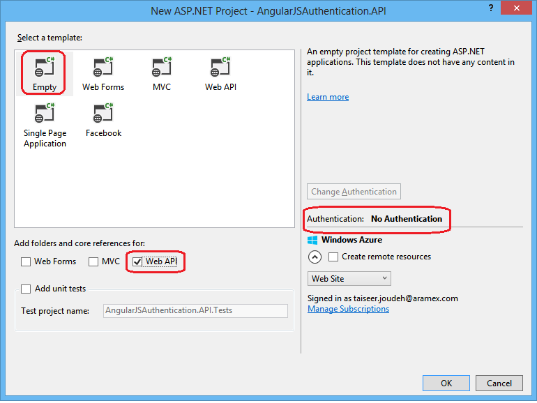
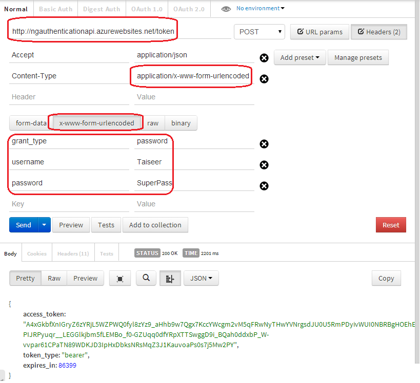
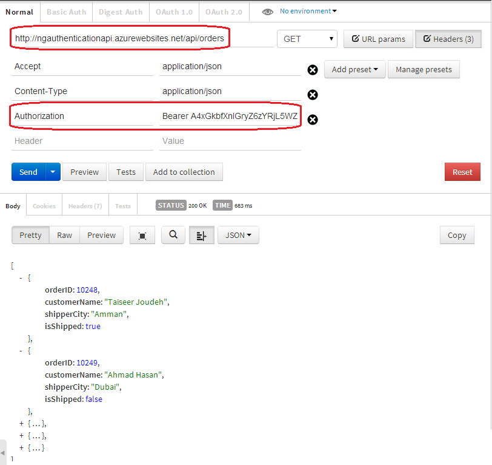

我准备写三篇,层层递进的从单server认证到单点认证,由于.NET比较容易搭建和配置,所以这个系列就用.NET吧,明白了原理,使用java,scala,nodejs,ruby基本上都是一样一样的.理论上每种高级语言只是实现的形式不一样而已.然后开始...
基于Token的API认证
在基于前后端分离的Web架构中,对于API权限的认证不能使用传统的session认证方式,一般会使用基于OAuth标准来认证用户的权限.OAuth允许用户提供一个令牌,而不是用户名密码来访问服务器的特定资源.每一个令牌授权一个特定的网站,在特定时段内访问特定资源.这样OAauth让用户可以授权第三方网站访问他们存储在另外服务提供者的某些特定信息.
那么我们将使用基于Token认证授权的方式来处理前端应用和后端API之间的交互.传统的方式是基于cookie的认证, 前端发送请求时会携带cookie,而服务端使用cookie来认证用户.
由于前端框架的巨大变化,使用基于Token的认证方法有这么几点好处:
- 服务扩展性:发送到server端的token包含用户的所有认证信息,所以这对微服务友好,因为这并不依赖存储共享session
- 松耦合:你的前端应用不需要额外添加认证机制,你的应用从服务端获取token,然后通过前端内置机制来使用token完成认证
- 移动设备友好:cookies或浏览器,但是在原生平台(android,ios)上存储cookies很麻烦,如果我们希望server端API与原生app协作,有一套标准的认证用户方法会非常友好
使用.net来构建认证系统
前端可能会使用HTML5,AngularJS,或React.后端服务如果通过.Net构建,那么Web API可以通过Owin中间件.我们可以通过配置服务器Owin中间件的OAuth bearer token来认证.我们使用它来注册用户,在生成token前认证用户权限.
注意:我说的后端API可以接受所有三方的请求,不仅仅我们自己的前端应用.这需要允许Cross Origin Resource Sharing.
开始构建后端API
第一步:创建web api 项目
如图创建一个Web Api的空项目,并选择"No Authentication",我们将手动来创建认证.

第二步:安装依赖
现在我们需要安装NuGet依赖来初始化我们的Owin server和配置.net web api.
Install-Package Microsoft.AspNet.WebApi.Owin -Version 5.1.2
Install-Package Microsoft.Owin.Host.SystemWeb -Version 2.1.0
“Microsoft.Owin.Host.SystemWeb” 用来允许Owin server在IIS上使用Asp.net请求管道运行我们的API.
第三步:添加Owin Startup 类
using Microsoft.Owin;
using Owin;
using System;
using System.Collections.Generic;
using System.Linq;
using System.Web;
using System.Web.Http;
[assembly: OwinStartup(typeof(AngularJSAuthentication.API.Startup))]
namespace AngularJSAuthentication.API
{
public class Startup
{
public void Configuration(IAppBuilder app)
{
HttpConfiguration config = new HttpConfiguration();
WebApiConfig.Register(config);
app.UseWebApi(config);
}
}
}
HttpConfiguration用来配置API 路由,所以我们会把这个对象传递给"WebApiConfig"类的Register方法.
最后,传递config来注册asp.net Web API到Owin server的管道中.
WebApiConfig类一般会自动被创建,如果没有的话把它添加到"App_Start"下面,实现如下:
public static class WebApiConfig
{
public static void Register(HttpConfiguration config)
{
// Web API routes
config.MapHttpAttributeRoutes();
config.Routes.MapHttpRoute(
name: "DefaultApi",
routeTemplate: "api/{controller}/{id}",
defaults: new { id = RouteParameter.Optional }
);
var jsonFormatter = config.Formatters.OfType().First();
jsonFormatter.SerializerSettings.ContractResolver = new CamelCasePropertyNamesContractResolver();
}
}
第四步:删除Global.asax
如果配置了Startup类就不需要Application_Start了.
第五步:添加ASP.NET Identity系统
我们配置完Web API之后,是时候添加注册和验证用户凭据的依赖了:
Install-Package Microsoft.AspNet.Identity.Owin -Version 2.0.1
Install-Package Microsoft.AspNet.Identity.EntityFramework -Version 2.0.1
第一个依赖是添加Identity Owin支持,第二个依赖是添加Identity的EF支持,用来注册用户到数据库.
接下来添加一个数据库类:
public class AuthContext : IdentityDbContext
{
public AuthContext()
: base("AuthContext")
{
}
}
这个类继承自IdentityDbContext类,这是一个特殊版本的"DbContext"类,提供所有EF code-first映射来管理Sql server表.
然后需要添加"UserModel"来注册用户,这是一个POCO类包含数据声明属性来验证请求数据.你可以把它放在"Models"文件夹下:
public class UserModel
{
[Required]
[Display(Name = "User name")]
public string UserName { get; set; }
[Required]
[StringLength(100, ErrorMessage = "The {0} must be at least {2} characters long.", MinimumLength = 6)]
[DataType(DataType.Password)]
[Display(Name = "Password")]
public string Password { get; set; }
[DataType(DataType.Password)]
[Display(Name = "Confirm password")]
[Compare("Password", ErrorMessage = "The password and confirmation password do not match.")]
public string ConfirmPassword { get; set; }
}
接下来添加一个连接字符串AuthContext.
第六步:添加数据库实现方法来支持Identity System
我们来实现两个方法:RegisterUser和FindUser,如下:
public class AuthRepository : IDisposable
{
private AuthContext _ctx;
private UserManager _userManager;
public AuthRepository()
{
_ctx = new AuthContext();
_userManager = new UserManager(new UserStore(_ctx));
}
public async Task RegisterUser(UserModel userModel)
{
IdentityUser user = new IdentityUser
{
UserName = userModel.UserName
};
var result = await _userManager.CreateAsync(user, userModel.Password);
return result;
}
public async Task FindUser(string userName, string password)
{
IdentityUser user = await _userManager.FindAsync(userName, password);
return user;
}
public void Dispose()
{
_ctx.Dispose();
_userManager.Dispose();
}
}
第七步:添加Account Controller
现在添加第一个web api controller来注册用户:
[RoutePrefix("api/Account")]
public class AccountController : ApiController
{
private AuthRepository _repo = null;
public AccountController()
{
_repo = new AuthRepository();
}
// POST api/Account/Register
[AllowAnonymous]
[Route("Register")]
public async Task Register(UserModel userModel)
{
if (!ModelState.IsValid)
{
return BadRequest(ModelState);
}
IdentityResult result = await _repo.RegisterUser(userModel);
IHttpActionResult errorResult = GetErrorResult(result);
if (errorResult != null)
{
return errorResult;
}
return Ok();
}
protected override void Dispose(bool disposing)
{
if (disposing)
{
_repo.Dispose();
}
base.Dispose(disposing);
}
private IHttpActionResult GetErrorResult(IdentityResult result)
{
if (result == null)
{
return InternalServerError();
}
if (!result.Succeeded)
{
if (result.Errors != null)
{
foreach (string error in result.Errors)
{
ModelState.AddModelError("", error);
}
}
if (ModelState.IsValid)
{
// No ModelState errors are available to send, so just return an empty BadRequest.
return BadRequest();
}
return BadRequest(ModelState);
}
return null;
}
}
上面代码提供注册post请求接口api/account/register,请求参数如下:
{
"userName": "jason",
"password": "123456",
"confirmPassword": "123456"
}
现在你可以注册用户了,如果返回200那么在数据库中有连接字符串指定的库中会插入AspNetUsers表.
强调一下:在真是环境中注册一定要使用HTTPS,用户密码需要加密传输.
第八步:添加安全的Orders Controller
现在我们添加另外一个controller来输出订单,我们只希望将这个借口暴露给认证用户,为了简单接口返回静态数据,添加OrdersController如下:
[RoutePrefix("api/Orders")]
public class OrdersController : ApiController
{
[Authorize]
[Route("")]
public IHttpActionResult Get()
{
return Ok(Order.CreateOrders());
}
}
#region Helpers
public class Order
{
public int OrderID { get; set; }
public string CustomerName { get; set; }
public string ShipperCity { get; set; }
public Boolean IsShipped { get; set; }
public static List CreateOrders()
{
List OrderList = new List
{
new Order {OrderID = 10248, CustomerName = "Taiseer Joudeh", ShipperCity = "Amman", IsShipped = true },
new Order {OrderID = 10249, CustomerName = "Ahmad Hasan", ShipperCity = "Dubai", IsShipped = false},
new Order {OrderID = 10250,CustomerName = "Tamer Yaser", ShipperCity = "Jeddah", IsShipped = false },
new Order {OrderID = 10251,CustomerName = "Lina Majed", ShipperCity = "Abu Dhabi", IsShipped = false},
new Order {OrderID = 10252,CustomerName = "Yasmeen Rami", ShipperCity = "Kuwait", IsShipped = true}
};
return OrderList;
}
}
#endregion
请注意Get方法的"Authorize"属性,如果你没有认证过将返回401错误.
第九步:添加OAuth bearer token 生成
直到现在我们都没有配置我们api使用OAuth认证, 这需要安装如下依赖:
Install-Package Microsoft.Owin.Security.OAuth -Version 2.1.0
安装完成后打开文件Startup调用新方法"ConfigOAuth":
public class Startup
{
public void Configuration(IAppBuilder app)
{
ConfigureOAuth(app);
//Rest of code is here;
}
public void ConfigureOAuth(IAppBuilder app)
{
OAuthAuthorizationServerOptions OAuthServerOptions = new OAuthAuthorizationServerOptions()
{
AllowInsecureHttp = true,
TokenEndpointPath = new PathString("/token"),
AccessTokenExpireTimeSpan = TimeSpan.FromDays(1),
Provider = new SimpleAuthorizationServerProvider()
};
// Token Generation
app.UseOAuthAuthorizationServer(OAuthServerOptions);
app.UseOAuthBearerAuthentication(new OAuthBearerAuthenticationOptions());
}
}
代码中我们从"OAuthAuthorizationServerOptions"类创建一个实例,设定选项:
- 使用”http://localhost:port/token”生成token,后面我们会展示使用post请求获取token
- 我们设定24小时token失效,如果超过24小时请求会被拒绝返回401
- 我们通过实现"SimpleAuthorizationServerProvider"来指定如何通过tokens验证用户身份认证
然后传参到方法“UseOAuthAuthorizationServer”来给管道添加认证中间件
第十步:实现"SimpleAuthorizationServerProvider"类
添加一个文件夹Providers然后添加一个新类SimpleAuthorizationServerProvider:
public class SimpleAuthorizationServerProvider : OAuthAuthorizationServerProvider
{
public override async Task ValidateClientAuthentication(OAuthValidateClientAuthenticationContext context)
{
context.Validated();
}
public override async Task GrantResourceOwnerCredentials(OAuthGrantResourceOwnerCredentialsContext context)
{
context.OwinContext.Response.Headers.Add("Access-Control-Allow-Origin", new[] { "*" });
using (AuthRepository _repo = new AuthRepository())
{
IdentityUser user = await _repo.FindUser(context.UserName, context.Password);
if (user == null)
{
context.SetError("invalid_grant", "The user name or password is incorrect.");
return;
}
}
var identity = new ClaimsIdentity(context.Options.AuthenticationType);
identity.AddClaim(new Claim("sub", context.UserName));
identity.AddClaim(new Claim("role", "user"));
context.Validated(identity);
}
}
可以看到这个类继承自"OAuthAuthorizationServerProvider",并且重写了两个方法“ValidateClientAuthentication” and “GrantResourceOwnerCredentials”. 第一个方法用来验证客户端,因为我们目前只有一个前端项目,所以我们总是返回验证成功.
第二个方法"GrantResourceOwnerCredentials"用来验证用户名和密码以及成功后给终端发出token,我们使用"AuthRepository"的FindUser方法来验证用户名密码是否有效.
如果认证成功会创建“ClaimsIdentity”对象和认证类型,我们使用bearer token会添加两个标志sub和role到签名token中去.你也可以添加不同标志,但这会让token变大.
然后通过调用“context.Validated(identity)”.来生成token.
前后端分离的架构需要我们“Access-Control-Allow-Origin”,如果不添加这个客户端无法请求token,这个配置不仅仅.net需要,所有的server都需要配置.
第十一步:web api的允许接入
添加如下依赖:
Install-Package Microsoft.Owin.Cors -Version 2.1.0
打开Startup修改代码如下:
public void Configuration(IAppBuilder app)
{
HttpConfiguration config = new HttpConfiguration();
ConfigureOAuth(app);
WebApiConfig.Register(config);
app.UseCors(Microsoft.Owin.Cors.CorsOptions.AllowAll);
app.UseWebApi(config);
}
第十二步:测试后端API
假设你已经注册了用户名:jason,密码123456.我们可以使用用户名密码来生成token,你可以使用postman或其他来发送POST请求到"http://localhost:port/token"如下:

如果请求正确,你会得到token,然后我们会通过添加bearer token在请求Authorization header.如下:

现在我们的后端API可以被任意的前端应用或手机应用使用了 :) 明天将会写下一篇,基于单点登录的认证.